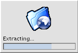

|
||||||||||||||||||||||||||||||||||||||||||||||||||||||||||||||||||||||||||||||||||||||||||||||||||||||||||||||||||||||||||||||||||||||||||||||||||||||||||||||||||||||||||||||||||||||||||||||||||||||||||||||||||||||||||||||||||||||||||||||||||||||||||||||||||||||||||||||||||||||||||||||||||||||||||||||||||||||||||||||||||||||||||||||||||||||||||||||||||||||||||||||||||||||||||||||||||||||||||||||||||||||||||||||||||||||||||||||||||||||||||||||||||||||||||||||||||||||||||||||||||||||||||||||||
|---|---|---|---|---|---|---|---|---|---|---|---|---|---|---|---|---|---|---|---|---|---|---|---|---|---|---|---|---|---|---|---|---|---|---|---|---|---|---|---|---|---|---|---|---|---|---|---|---|---|---|---|---|---|---|---|---|---|---|---|---|---|---|---|---|---|---|---|---|---|---|---|---|---|---|---|---|---|---|---|---|---|---|---|---|---|---|---|---|---|---|---|---|---|---|---|---|---|---|---|---|---|---|---|---|---|---|---|---|---|---|---|---|---|---|---|---|---|---|---|---|---|---|---|---|---|---|---|---|---|---|---|---|---|---|---|---|---|---|---|---|---|---|---|---|---|---|---|---|---|---|---|---|---|---|---|---|---|---|---|---|---|---|---|---|---|---|---|---|---|---|---|---|---|---|---|---|---|---|---|---|---|---|---|---|---|---|---|---|---|---|---|---|---|---|---|---|---|---|---|---|---|---|---|---|---|---|---|---|---|---|---|---|---|---|---|---|---|---|---|---|---|---|---|---|---|---|---|---|---|---|---|---|---|---|---|---|---|---|---|---|---|---|---|---|---|---|---|---|---|---|---|---|---|---|---|---|---|---|---|---|---|---|---|---|---|---|---|---|---|---|---|---|---|---|---|---|---|---|---|---|---|---|---|---|---|---|---|---|---|---|---|---|---|---|---|---|---|---|---|---|---|---|---|---|---|---|---|---|---|---|---|---|---|---|---|---|---|---|---|---|---|---|---|---|---|---|---|---|---|---|---|---|---|---|---|---|---|---|---|---|---|---|---|---|---|---|---|---|---|---|---|---|---|---|---|---|---|---|---|---|---|---|---|---|---|---|---|---|---|---|---|---|---|---|---|---|---|---|---|---|---|---|---|---|---|---|---|---|---|---|---|---|---|---|---|---|---|---|---|---|---|---|---|---|---|---|---|---|---|---|---|---|---|---|---|---|---|---|---|---|---|---|---|---|---|---|---|---|---|---|---|---|---|---|---|---|---|---|---|---|---|---|---|---|---|---|---|---|---|---|---|---|---|---|---|---|---|---|---|---|---|---|---|---|---|---|---|---|---|---|---|---|---|---|---|---|---|---|---|---|---|---|---|---|---|---|---|---|---|---|---|---|---|---|---|---|
|
|
ManualTo set up an AntInstall there are a few requirements.
This part of the guide is the reference manual for the
configuration of |
|||||||||||||||||||||||||||||||||||||||||||||||||||||||||||||||||||||||||||||||||||||||||||||||||||||||||||||||||||||||||||||||||||||||||||||||||||||||||||||||||||||||||||||||||||||||||||||||||||||||||||||||||||||||||||||||||||||||||||||||||||||||||||||||||||||||||||||||||||||||||||||||||||||||||||||||||||||||||||||||||||||||||||||||||||||||||||||||||||||||||||||||||||||||||||||||||||||||||||||||||||||||||||||||||||||||||||||||||||||||||||||||||||||||||||||||||||||||||||||||||||||||||||||||

| <installer> | ||
|---|---|---|
The installer element is
the root element of the config and has the following attributes. |
||
| Attribute | Description | Example |
| ui | Indicates the supported installation modes from the following four values text, swing, swing-auto and text-auto. swing indicates the GUI can be shown, text means the commandline interface can be shown. -auto installs
are silent installs that read the properties from a file, if available,
instead of running the full UI. Ensure you understand the consequences
before enabling -auto builds. This attribute should be a comma separated list of values (whitespace is stripped). |
swing,text, text-auto,swing-auto |
| loadDefaults | This flag can be true, false or prompt. Indicates what AntInstaller should do if it finds existing properties in a file. | false |
| verbose | Print more info the the install log file and more
info in the ant.install.properties file. N.B. the properties file may not be written if the installer
can not write to the current directory. |
true |
| debug | Setting this flag prevents the temporary directory from being deleted on exit, this is useful for debugging install scripts. It should normally be set to false or ommited for a final installer. | false |
| lookAndFeel | The LookAndFeel class for the installer or one of the following special values.
jgoodies is
assumed. If the LookAndFeel can not be loaded a message will be added
to the log file and the install will continue with the Java default. |
greymetal jgoodies |
| name | The name of the installer, this will appear in the title of the installer GUI window. | My Installer |
| windowIcon | This is the resource name of the icon for the installer window. It is a string that is used to load the resource from the classpath so the image must be in one of the jars on the classpath of the install start script. In the self installer it must be in the correct directory of the Jar. | /resources/gkmain_inv.png |
| defaultImageResource | This is the resource image used for the top of the installer GUI by default, it can be overridden for individual pages. | /resources/greens.png |
| minJavaVersion | The minimum Java version for the installer, this is supported as of AntInstaller 0.8beta do disable this feature remove the attribute. | 1.4 |
| finishButtonText | The text displayed on the install button. If not specified, the default is "Install". This has been added since Antinstaller can be used as a GUI for other Ant builds, in which case "Build" would be more appropriate. | Install |
| antialiased | If this attribute is set to true and the LookAndFeel is org.tp23.jgoodies.plaf.plastic.PlasticXPLookAndFeel or jgoodies
the Swing GUI will render using Java 2D antialiasing for the text. This
is resource intensive and may slow the GUI down unacceptably on older
PCs, but does look better. |
false |
| wide | If this attribute is set the width of the installer GUI can be configured. The format is
[window-size]:[label-width] |
600:275 |
| version | Defines a version for the installer, this attribute is optional and defaults to "0.0". However, if you want to support automatic installs
(ui includes text-auto or swing-auto) this can be used to indicate that
a new installer is not compatible with previous properties files. If a
new installer for an application is developed that requires new
properties increment the major version and old properties files will
not be loaded. Increment the minor version if the properties are
compatible but additional properties have been added and must be
maually entered, text-auto and swing-auto builds will be forbidden. If the new version of the installer is a compatible version with the properties file found, it will load without errors. No checking is done to ensure that this is logical. When delivering upgraded installers you should ensure that old properties file versions are compatible if you do not increment the version and support automatic installs. |
1.0.2 |
| <page> | ||
|---|---|---|
| Pages entries in the XML file represent a single window in the installer moved through by the user by selecting "Next >>" (or pressing enter) all pages have the following atributes. | ||
| Attribute | Description | Example |
| type | The type of page one of four options, progress, license, splash or input. | input |
| name | A unique name for the page. | User properties |
| displayText | The text to be shown at the top of the page. | Install Options |
| imageResource | The image to be shown at the top of the page, overriding the defaultImageResource defined in the installer element. | Install Options |
| target | An ant target that will always be run from the build.xml
file. This attribute is optional see the Target input type if you wish
to show a targets that can be selected by the user. |
clean |
| overflow | Setting this to true causes the Swing GUI to allow the page to extend past the normal height and for scrollbars to be shown when the page overflows. | true |
| <page type="splash"> | ||
|---|---|---|
| Displays a graphical image page in the Swing GUI | ||
| Attribute | Description | Example |
| splashResource | The image resource used for the splash image. The resource must be available on the classpath at runtime. | /resources/large-logo-image.png |
| altText | Alternative text for the console mode | Welcome to the installer app |
| <page type="text"> | ||
|---|---|---|
| Displays an HTML page in swing and a text file in text mode. | ||
| Attribute | Description | Example |
| htmlResource | The resource used for the html page. The resource must be available on the classpath at runtime. The HTML support is that of the Swing JTextPane which is very basic. Embeded images and style sheets are refereced from the classpath. The following HTML will display an image from the classpath. <img src="/resources/image.png">Property values are expanded in the file if variables of the form ${java.user.name} are found. |
/resources/text.html |
| textResource | Alternative text for the console mode. Property values are expanded in the file if a variable of the form ${java.user.name} are found. |
/resources/text.text |
| <page type="license"> | ||
|---|---|---|
| Shows a single license file in a scrollable window to the user. | ||
| Attribute | Description | Example |
| resource | The license text file resource, must be on the classpath. | /resources/GPL.txt |
| usePaging | In text mode this parameter stops the scrolling of the license text at 20 lines, and provides options to view the next page or skip to the end. The default is false. | true |
| <page type="input"> | ||
|---|---|---|
| A page for adding input types listed below. An installer can have as many input pages as desired. | ||
| Attribute | Description | Example |
| ifTarget | This page will be show if the named target has previously been selected. This can be used to
conditionally show installation pages when certain parts of the build.xml script are to be run and not
if they are to be omitted. |
documentation |
| ifProperty | This page will be shown if the property has the correct value. This can be used to
conditionally show installation pages when certain properties match
The format of the property can be as simple as ${name}=value or can combine tests on multiple properties such as (${name}!=value) AND (${name2}^=value2). There must be no spaces
and both the property and value are case sensitive. It is a good idea to use a select input type
for the value since free text entered by the user is unlikely to match exactly in case and whitespace or use validated
text fields.
N.B. to run tasks based on properties consider the ant-contrib packages. The new syntax allows for environment variable checks such as ${env.DISPLAY}=:0.0
N.B. the old syntax name=value does not work any more. It is not possible to
place an = sign in a property name.e.g. ${prop.col=back}=#0000FF will break the simple parser.
The following operators are supported:
The following logical operators are supported when combining property tests:
It is probably a bad idea to use any character that is not a letter or number in a property name because these operators may be extended in the future |
${myProperty}=value23 (${myFirstProperty}=6) OR (${mySecondProperty}+=12) |
| postDisplayTarget | Post display targets are special Ant targets run after the page has been displayed. Certain rules apply see post display targets | antinstaller-pagename |
| <page type="progress"> | ||
|---|---|---|
A page for showing the user the progress
of the installation. This page contains the "Install" Button, so all
installers should end with a progress page. Currently it is not checked
that an installer ends with a progress page so the creator of the antinstall-config.xml
should ensure it does. |
||
| showTargets | When this flag is true, in the Swing GUI, a graphical representation of the targets being run and the dependent targets found is displayed. | true |
Input Types
Input types represent fields in which users can input values or make selections.The input type element is also used to display text to the user. While there is no limit to the number of comments or text you can add in the config file, the GUI only has a limited amount of space. Check your config with your choosen Look And Feel to ensure that instructions are not cropped.
All input types accept the
explanatoryText attribute, where multi-line comments can be added.
The GUI has a fixed width available for the displayText attribute which often does not provide much space.
Single line comments can be added with the comment type.If anyone has a serious requirement to include more text that is currently possible post an RFE and I will look into tool tip popups or a scrollable text box or perhaps instructions that can launch in a help window. This has not been added yet since it is much more difficult to implement in the command line UI, and as yet we have no requirement.
| <checkbox> | ||
|---|---|---|
| The check box input is used for boolean input, a check box in the gui and a true false option on the command line. | ||
| Attribute | Description | Example |
| property | The name of the property to be set in the ant.install.properties
file the value will be true or false. |
my.property |
| displayText | The text to be shown describing the option. | Enable all security options |
| defaultValue | The default for the check box. | true |
| force | Force the option selected to be the default value. This can be used to indicate that the option is required. For example, an installer could be delivered where "Enable all security options" is always selected. | false |
| <comment> | ||
|---|---|---|
| The comment input displays text to the user and does not accept any type of input. | ||
| Attribute | Description | Example |
| displayText | The text to be shown describing the option. | W |
| bold | Display the comment in bold, in the GUI version. | true |
| title | Display the comment in a larger font in the GUI or in capitals in the command line. | false |
| <directory> | ||
|---|---|---|
| The directory input allows the user to select a directory. | ||
| Attribute | Description | Example |
| property | The name of the property to be set in the ant.install.properties
file the value will be the absolute path to the directory. |
file.property |
| displayText | The text to be shown describing the option. | Select an installation directory |
| defaultValue | The default for the directory. Empty defaultValue is accepted as of version beta0.8 provided that create and checkExists are false. | /var/log |
| defaultValueWin | The default for the directory for windows installations. | C:\Program Files\myapp |
| create | If this is true and the directory entered does not exist the user will be asked if the directory should be created. | true |
| checkExists | If true the installation will not continue unless the directory selected exists. The user will have to select a directory that does exist, create it or cancel the install. If create is true and the directory does not exist the user simply has to agree to have the directory created. | false |
| <app-root> | ||
|---|---|---|
| The directory input allows the user to select a directory. The existence of files is then checked during validation to ensure the user has selected the correct directory. This can be used so a user can select the installation directory of a previously installed application. The directory can then be validated against 2 known files and 2 known directories that should exist. | ||
| Attribute | Description | Example |
| property | The name of the property to be set in the ant.install.properties
file the value will be the absolute path to the directory. |
file.property |
| displayText | The text to be shown describing the option. | Select an installation directory |
| defaultValue | The default for the directory. | /usr/local/jakarta-tomcat-4.0.1 |
| defaultValueWin | The default for the directory for windows installations. | C:\Program Files\Existing Application |
| checkFile1 | The relative path of a file based on the user selected directory. When the installer is run this file will be checked to see if it exists (optional). | conf/server.xml |
| checkFile2 | A second file to check (optional). | conf/server.xml |
| checkDir1 | The relative path of a directory based on the user selected directory (optional). | webapps |
| checkDir2 | A second directory to check (optional). | conf |
| <file> | ||
|---|---|---|
| The file input allows the user to select a file | ||
| Attribute | Description | Example |
| property | The name of the property to be set in the ant.install.properties
file the value will be the absolute path to the file. |
file.property |
| displayText | The text to be shown describing the option. | Select the weblogic configuration file |
| defaultValue | The default for the file. | /var/log |
| defaultValueWin | The default for the file when installing on windows. | C:\log |
| checkExists | If true the installation will not continue unless the file selected exists. The user will have to select a file that does exist, create the file or cancel the install. If you want to create the file during the install if it does not exist use Ant. | false |
| <select> | ||
|---|---|---|
The select input allows the user to
select from a list of options. This will be represented as a group of
radio buttons or a numbered list on the command line. An input type of
select should have at least two child elements called <option> with the
attributes text and value. The text is displayed next to the option and
the value is the value set into the property. N.B. the defaultValue should be blank or one of the values in one of the options. This is not checked by AntInstaller but is a requirement, there are no guarantees if you don't RTFM. |
||
| Attribute | Description | Example |
| property | The name of the property to be set in the ant.install.properties
file. The value will be the text of one of the option value attributes. |
file.property |
| displayText | The text to be shown describing the options available. | Select your favorite colour |
| defaultValue | The default for the option this should match one of the options values. | #FF0000 |
| <target-select> | ||
|---|---|---|
| The target-select input allows the user to
select targets from a list of options. This will be represented as a group of
radio buttons or a numbered list on the command line. This input type is almost identical to the select
input type but the value as well as being recorded as a property is set as a target. An input type of target-select should have at least two child elements called <option> with the
attributes text and value. The text is displayed next to the option and
the value is the target to be run (and the value set into the property).
N.B. the defaultValue
should be blank or one of the values in one of the options. This is not checked by AntInstaller at runtime
but is a requirement, there are no guarantees if you don't RTFM. You should use the checkConfig script to validate the config. |
||
| Attribute | Description | Example |
| property | The name of the property to be set in the ant.install.properties
file. The value will be the text of one of the option value attributes and will be the target that is run. |
target.property |
| displayText | The text to be shown describing the options available. | Select your favorite colour |
| defaultValue | The default for the option this should match one of the options values. | fulldocs |
| <large-select> | ||
|---|---|---|
The large select has identical options to the select input above.
Large select enables the list of options to be greater and is displayed differently.
In the Swing GUI the options are rendered as a drop-down list. In the text/console UI
the options are shown to the user 20 lines at a time. |
| <target> | ||
|---|---|---|
| The target input shows a check box, if the user selects the target the Ant target will be run when the installation starts. The order of the targets in the list is significant, and the targets will be run in that order. If there is more than one Page with target entry types or there is a page with a target attribute the targets will be run in the order they appear in the config file. | ||
| Attribute | Description | Example |
| target | The name of the target to be run it must exist in the build.xml file delivered with the install. | installSource |
| displayText | The text to be shown describing the options available. | Do you want to install the source code. |
| defaultValue | true or false, determines if the check box is selected by default. | true |
| force | If true the checkbox will not be editable and will be set to the value in the defaultValue attribute. This can be used to indicate that installing this component is not optional. | false |
| osSpecific | If the osSpecific flag is set the Operating System of the current system will be appended to the name of the target actually run by Ant so that different targets can be run according to the final deployment platform. This feature goes against the principles of building cross platform installers, but is provided so that common installer tasks such as creating icons and shortcuts can be run using the platform specific executables. | false |
| strict | Currently there are two modes for OS specific targets strict and not strict (lax). Strict target will return the target name plus the exact String in the System Property "os.name" this means you will have to provide targets for every possible OS version. See this page for a list of possible values. There are a great many but you may not want to consider some of the options. Lax target will return one of the following strings only
|
false |
| <text> | ||
|---|---|---|
| An text input entry is a field into which the user can write any text (or no text). | ||
| Attribute | Description | Example |
| property | The name of the property to be set in the ant.install.properties
file, the value will be the text entered by the user. |
name.property |
| displayText | The text to be shown describing the text to be entered. | Enter your name |
| defaultValue | The default value if the user enters no text or displayed as a default in the GUI. | ${java.user.name} |
| <validated> | ||
|---|---|---|
| A validated text input entry is a text field into which the user can write any text but the installation will not continue unless the text entered matches a regular expression provided. | ||
| Attribute | Description | Example |
| property | The name of the property to be set in the ant.install.properties
file, the value will be the text entered by the user. |
server.url |
| displayText | The text to be shown describing the text to be entered. | Enter your name |
| defaultValue | The default value if the user enters no text, this should be valid according to the regular expression. | true |
| regex | The regular expression used to validate the text, the whole regex should match the text entered. | ^[0-9][0-9]-[0-9][0-9]-[0-9][0-9][0-9][0-9]$ |
| <ext-validated> | ||
|---|---|---|
An externally validated text input entry is a text
field into which the user can write any text but the installation will
not continue unless the text entered passes a validation function. The validation function is not part
of AntInstaller, a fully qualified classname (that is on the classpath at runtime) is specified which AntInstaller
executes to validate. One instance will be created per input element which should conform to the interface
org.tp23.antinstaller.input.Validator. This feature is not tested but does provide flexibility in validating input, if you use this feature please report back you results (success or failures) to the AntInstaller project pages. We wish to discuss integrating external validation into the Localization of the installers (when it happens) with active users of this feature. |
||
| Attribute | Description | Example |
| property | The name of the property to be set in the ant.install.properties
file, the value will be the text entered by the user. |
server.url |
| displayText | The text to be shown describing the text to be entered. | Choose an open network port |
| defaultValue | The default value if the user enters no text, this should be valid according to the external validator. | true |
| validationClass | The class used as a Validator | com.me.val.PortOpenValidator |
| <date> | ||
|---|---|---|
A text input entry that must be a valid
date. The dateformat string must be compatible with java.text.SimpleDateformat
By default the format is english dates dd/MM/yyyy but can be
changed to any valid format. If the date field is used in an installer it is not possible to enter blank dates. |
||
| Attribute | Description | Example |
| property | The name of the property to be set in the ant.install.properties
file, the value will be the date entered by the user. |
mydate.property |
| displayText | The text to be shown describing the date to be entered. | Enter your name |
| defaultValue | The default value if the user enters no text, this
should be valid according to the date format. Alternatively the String TODAY
may be entered and the default value will be the time the installer is
run. |
true |
| dateFormat | The expression used to create the DateFormat. | dd-MM-yy |
| <password> | ||
|---|---|---|
| A password text input is identical to a validated text input except that the display does not echo in the Swing Version (If anyone knows how to prevent the console echoing please get in touch) This password field is VERY INSECURE so dont blame me. | ||
| Attribute | Description | Example |
| property | The name of the property to be sent to Ant the
password will not feature in ant.install.properties file,
the value will be the text entered by the user. If the installer is in
verbose mode the properties file will contain the property name but not
the value entered by the user. |
password.property |
| displayText | The text to be shown describing the password to be entered. | Enter password |
| defaultValue | The default value if the user enters no text, this should be valid according to the regular expression. This will be shown as an example if the user enters an invalid password. | pa55word |
| regex | The regular expression used to validate the text, the whole regex should match the text entered. | ^[a-zA-Z_0-9]{8}$ |
| textMask | When set to true an attempt is made to hide the password on the command line.
This feature is optional and has not been tested on different platforms.
It is a pure Java solution using a masking thread so there
is a theoretical requirement for some CPU head room to function correctly.
It does not work where \r is not supported for example the eclipse console.see SUN's proposed solution http://java.sun.com/features/2002/09/pword_mask.html see also, the embarrasing bug report on SUNs site http://bugs.sun.com/bugdatabase/view_bug.do?bug_id=4050435 see also, Ant's bug report http://nagoya.apache.org/bugzilla/show_bug.cgi?id=6687 |
true |
| <password-confirm> | ||
|---|---|---|
| A confirm password input is identical to a password input except that to validate correctly a password field on the same page with the property name specified in the origField attribute. | ||
| Attribute | Description | Example |
| origField | There must be a password field with its property set to this value on the same page. | password.property |
| displayText | The text to be shown describing the password to be entered. | Confirm password |
| defaultValue | The default value if the user enters no text, this should be valid according to the regular expression. This will be shown as an example if the user enters an invalid password. | pa55word |
| regex | The regular expression used to validate the text, the whole regex should match the text entered. | ^[a-zA-Z_0-9]{8}$ |
| textMask | When set to true an attempt is made to hide the password on the command line.
This feature is optional and has not been tested on different platforms.
It is a pure Java solution using a masking thread so there
is a theoretical requirement for some CPU head room to function correctly.
It does not work where \r is not supported for example the eclipse console.see SUN's proposed solution http://java.sun.com/features/2002/09/pword_mask.html see also, the embarrasing bug report on SUNs site http://bugs.sun.com/bugdatabase/view_bug.do?bug_id=4050435 see also, Ant's bug report http://nagoya.apache.org/bugzilla/show_bug.cgi?id=6687 |
true |
Hidden Elements
Hidden elements are those elements of pages which are not displayed to the user, but which can be used to set properties and apply conditional logic.| <conditional> | ||
|---|---|---|
| The conditional element allows the conditional execution of a nested element. Currently, only <hidden> elements may be nested within a conditional block. This can be useful for initialising properties or default values based on other user selections | ||
| Attribute | Description | Example |
| ifProperty | The nested hidden element(s) will be evaluated if the property has the correct value.
This can be used to
conditionally set properties when certain other properties match specific values.
The format of the property can be as simple as ${name}=value or can combine tests on multiple properties such as (${name}!=value) AND (${name2}^=value2). There must be no spaces
and both the property and value are case sensitive. See the ifProperty description
for details of the comarisons supported. |
(${prop1}=1) OR (${prop2}=${prop3}) |
| <hidden> | ||
|---|---|---|
The hidden element allows a property to be set by virtue of the page being displayed or,
when nested within a conditional block, if the condition is true.
This can be useful for initialising properties or default values based on other user selections. |
||
| Attribute | Description | Example |
| property | The name of the property to be set in the ant.install.properties |
my.property |
| value | The value to which the property will be set | myvalue |
To edit the
antinstall-config.xml file with the above properties a good XML editor is
recommended. A DTD exists to aid debugging this file. Add the following doctype to enable validation
<!DOCTYPE installer PUBLIC "-//tp23 //DTD Ant Installer Config//EN"
"http://antinstaller.sf.net/dtd/antinstall-config-0.8.dtd">
If you find errors in the DTD please report them.build.xml
Once the antinstall-config.xml file is created you need
to create an Ant build.xml file with targets that match
the targets available in the install config. The build.xml file is out of scope of this document. The Ant documentation is avaliable at the following URL. http://antinstaller.sourceforge.net/manual/manual/index.html
There are many tools to help you create these files, for example, eclipse has built in support.
There are some recomendations for the
build.xml file to be used inside an installer.
- It is not recommended to use
dependsattributes for targets, although they do work in most situations. The progress page graphic sometimes produces confusing results, for this reason it can be disabled.dependstargets may be called more often than expected since all targets specified in theantinstall-config.xmlfile and selected by the user are called explicitly. For the same reason be carful with theifattribute in target elements. - Classpath
modifications are irrelevant if all classes are packaged in a
self-extracting or non-extracting Jar. Any task dependencies should be
packaged with into the Jar with the
zipgroupfilesetfileset type.
for example<zipgroupfileset dir="tasklibs" includes="*.jar"/> - The
basedirattribute, if specifed in the project element, is ignored and set by AntInstaller. It is included in many AntInstaller examples since most tools expect this attribute to be present. - The
${ant.home}property should not be relied upon, The computer on which the installer is being run may not have Ant installed. - Ant dependencies, for example Jars for optional tasks, should be explicitly added to the installer jar with a
zipgroupfileset. - Some
other default Ant properties that relate to a presumed Ant
configuration are not reliable due to the way Ant is launched in
AntInstaller, for example
${ant.file} - Some complex output redirections do not work as expected since output is already redirected to the log files.
install.sh Start scripts
It is recommended to run create installers as self extracting jars, but it is
possible to run the installer from scripts as a normal Java application.
Create a new directory and prepare the files as you would
for a normal Ant build. You can include the install.sh
and install.cmd files from the demo app to launch the
installer. These scripts can be launched in a GUI by double clicking on
them, but they will require editing to set your classpath and resources correctly.The main class (
org.tp23.antinstaller.runtime.ExecInstall) that starts the installer takes two parameters
on the command line which should be set in the start script.The first is the default GUI mode (either swing or text).
The second is the Ant basedir and typically it should be just "." the current directory. This directory will be the basedir of the ant script no matter what it says in the
build.xml file.
The Ant runner currently passes the directory called
antlib
in which
you can add any Ant optional jars to get them to auto load. You
can also load them on classpath of the install scripts.Self Extracting Jars
There is a mechanism to create a self extracting Jar where the entire installer, all requried Java code, and the resources to install can be packaged into a single Jar. The Jar is launched by double clicking on it (if the.jar extension is registered properly by Java) or by calling
the command java -jar [jar_name].jar.In windows if the extension
.jar has been re-registered (e.g. to open with winzip) right clicking on the jar
and selecting Open With then javaw will also run the installer.Packaging a self extracting jar can be achieved with Ant. See Installer Ant Task to automate creation of SelfExtracting jars.
When the isntaller is run all the contents of the jar will be extracted to a temporary directory on the users machine. This temporary directoy is the base directory for the Ant build when run. The build.xml file should not include any relative file references. The
${basedir} property is required since
the file is excracted a new empty temporary directory that is not know when
the build.xml file is being written. This directory will be the value of ${basedir}
when the installer is run. If packagine the self extractor manually
without using the AntInstaller task the main class should be set in the
manifest. Here is an example
MANIFEST.MF file.Manifest-Version: 1.0 Main-Class: org.tp23.antinstaller.selfextract.SelfExtractor Look-And-Feel: org.tp23.jgoodies.plaf.plastic.PlasticXPLookAndFeelThe Look And Feel is also required in the
MANIFEST.MF file since the autoextract code shows a progress bar using Swing.
The value should be the same Look And Feel used in the main Swing GUI specified in the installer element of antinstall-config.xml. If not, ensure the main Look And Feel fully supports updating the UI, not LAFs all do.
If a resource is included called
/resources/extract-image.png it will be displayed during the
extraction process. You can remove the image from the classpath if you don't like it or change it to any other
png image of the same size.
Non Extracting Jars
As of version 0.7.2 a feature has been added to load the installer without having to extract any files until the Ant build is run. This has the advantage of not having to unjar AntInstaller itself or its dependencies such as Ant and the look and feel. See Installer Ant Task to automate creation of NonExtracting jars.If you are manually packaging the Jar in order to specify that the NonExtractor should be used the Jar
META-INF/MANIFEST.MF file should specify
org.tp23.antinstaller.selfextract.NonExtractor. Since the NonExtractor does not need to show
the progress bar for the extraction no look and feel is required in the manifest.
An example META-INF/MANIFEST.MF
Manifest-Version: 1.0 Main-Class: org.tp23.antinstaller.selfextract.NonExtractorThe NonExctractor still creates temporary space on the deployment system and still sets the
${basedir}
to this space.
The build.xml file and the antinstall-config.xml
are read from inside the Jar and all properties are passed directly to
Ant. The properties file is still readable for debuging installers. In
order to access and extract resources inside the Jar the unzip or unjar
Ant tasks should be used. In order to identify the Jar file in teh
build.xml file a new property has been added ${antinstaller.jar}.
The following example
extracts a file called myresource.zip into the temporary directory (from there it could be unzipped
to the deployment directory)
<unzip src="${antinstaller.jar}" dest="${basedir}">
<patternset>
<include name="myresource.zip"/>
</patternset>
</unzip>
A more likely example is to unzip all the files in your application to the installation directory selected by the user.
<unzip src="${antinstaller.jar}" dest="${my.installation.dir}">
<patternset>
<include name="bin/*"/>
<include name="classes/*"/>
<include name="help/*"/>
<include name="doc/*"/>
</patternset>
</unzip>
Remember all the classes for AntInstaller need to be in the root of the Jar for the JVM to find them when the
Jar is first loaded so it is probably best to put all the deployable resources in a subdirectory inside the Jar
This will prevent name clashes with the Jars contents which are in the org, META-INF and resources directories. Dynamic References
As of version beta 0.5 in certain circumstances the default values of input fields can be based on existing properties. To reference collected input values use the Ant property syntax${property.reference}.
References can be mixed with normal text as in Ant. For example,
<text
property="new.property"
displayText="Enter the installation directory"
defaulValue="/usr/local/${project.short.name}"
defaultValueWin="C:\Program Files\${project.short.name}"
create="true"
/>
As of version beta 0.7 the default values of input fields can be
based on environment variables. To reference collected input values use
the normal Ant syntax ${env.ENVIRONMENT_VARIABLE}.The prefix is always
env. since this is not set with an Ant <property> task, it is part of the AntInstaller runtime. The results will be identical to <property environment="env."> since AntInstaller make direct calls to the Ant APIs.The environment is NOT added by default to the build.xml or the installer when Ant runs, if you need the environment in the
build.xml file call it in the usual way
Also the java system properties are included prefixed by "java.". For example, ${java.user.name} returns the user currently running the installer.
Dynamic references can use nested property values. For example, if the value of
${target.server} is tomcat,
the following syntax can be used to set the default value of an input property to be the value of ${tomcat.default.http.port}<validated
property="http.port"
displayText="HTTP port:"
defaultValue="${${target.server}.default.http.port}"
regex="^[0-9]{2,5}$"
/>
Dynamic references have the following limitations
- Dynamic references can only be added to
defaultValue,defaultValueWin, commentdisplayText, commentexplanatoryTextand text or html in a text page (currently) - The properties must have been set in previous pages not in the current page (or future pages)
- Unlike Ant if the property has not been evaluated a blank string "" will be inserted instead of the reference.
This means accidents like
/usr/local/${non.prop}should not happen but will use/usr/local, generally neither case is desired, so as with Ant check the effects of absent properties before releasing your installer. Alternativly use a validated text field and specify a minimum length in the regular expression to ensure that blank values do notget accepted. - Once a user has edited a field the evaluation stops.
For example, on the first page${proj.short.name}is set and on a subsequent page${proj.short.name}/liband${proj.short.name}/classes. If the user changes one field to[value of ${proj.short.name}]/myclassesand then goes back and changes the first page when the subsequent pages are shown the value will not update to[new value of ${proj.short.name}]/myclasses. This only applies to the Swing GUI since in the command line the user can not go back.
Page Displaying
It is a common requirement to have a few options at the start of the installer and only show certain other pages if the user selected one of the initial options. For example, an option to install the source code, if the user is going to install the source code show a page with options to decide where to put the code, the documents and perhaps a checkbox if icons for the documents should be created. This page should not be shown to people who are not installing the source code. Two mechanism are available to achieve this.The first mechanism is to use a
target input on a previous page and then add ifTarget attributes to the subsequent page elements.
The second mechanism uses the ifProperty
attribute to conditionally show pages based on the existence or value
of properties. Since both the System Properties from Java and the users
environment variables are available as properties it is now possible to
base pages on the existence of certain properties for example if
CATALINA_HOME is set it is a safe bet the user already has tomcat
installed. Also if ProgramFiles is present it is probably a windows
system. N.B. for more a more accurate way to run tasks based on the
operating system of the user the target tag has been enhanced to run
osSpecific targets. See the ifProperty attribute of the InputPage type.